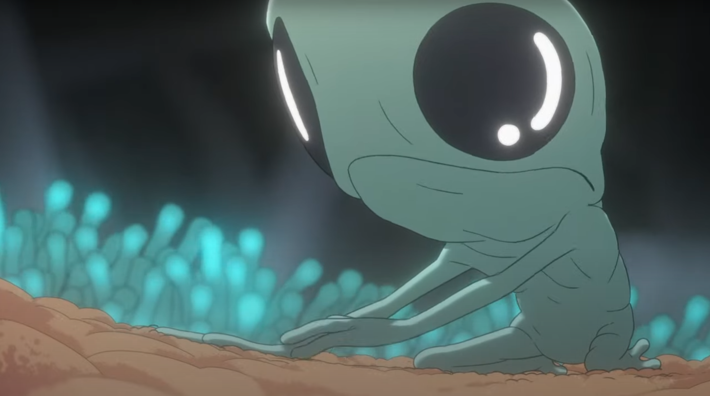
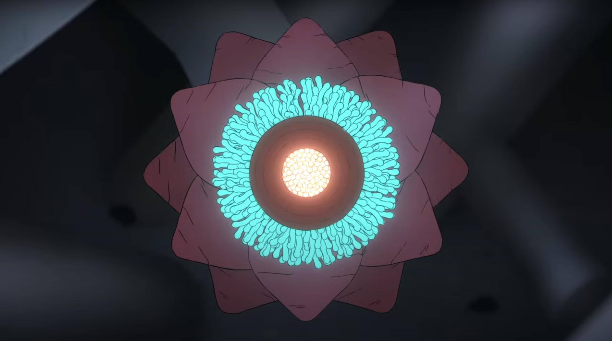
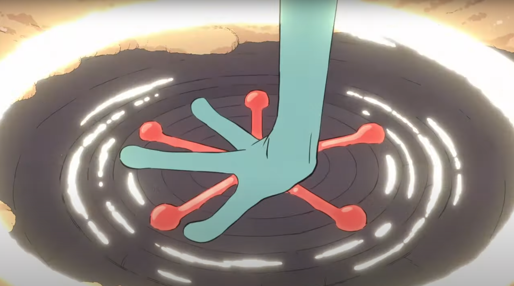

Project Features
Overview:
Creating a believable alien world teeming with life requires believable behavior. Any biologist knows form = function. I analyzed scientific papers exploring ethology (the “seeking system”, the evolution of nervous systems, and community relationships) to categorize possible motives for animal behavior. I also explored creative media like Scavenger’s Reign and Subnautica to isolate what elements of simulated life feel “alive”.
-
1. SEEKING--Expectancy. Stimulating the nucleus accumbens and the lateral hypothalamus, areas associated with the SEEKING System, will generate an urge to seek, expect, investigate, and be motivated. Related to Dopamine.
2. FEAR--Anxiety. When the amygdala and periaqueductal gray (PAG) areas of the brain are stimulated, the “fight, flight, or freeze” reaction will quickly emerge.
3. RAGE--Anger. When the medial area of the amygdala is stimulated, the animal will propel themself forward to fend off the offensive object, and snarl or bite.
4. LUST--Sexual excitement. This primary emotion is generated in the amygdala and hypothalamus.
5. CARE--Nurturance. When this system is aroused, an animal has strong impulses to tenderly take care of another.
6. PANIC/GRIEF--Sadness. This primary emotion is often triggered by separation distress.
7. PLAY--Social joy. Playful and light-hearted movements and laughter characterize this primary emotion.
In abstracting forms of universal gameplay, I determined two categories for action-oriented behavior (accessible to the player and NPCs):
| Interaction | Movement |
|---|---|
|
|
|
These categories apply to all organisms and can be used in various combinations to achieve more complex behavior on an individual, community, and species level.
Combing behaviors can easily balloon scope. To remain focused, I looked at the most player-centered interactions that elicit intrinsic (emotional) rewards. The natural world operates without us watching. It’s especially important to optimize for what players notice. These limits also maintain performance and reduce the potential of obscure systems that “feel unfair”.
I believe the most exciting (and manageable) emergent behavior occurs through interaction. So I identified the focus of this gameplay in this game as the intersection of independent and social behaviors.
| Type of Behavior | Effect on Donor | Effect on Receiver |
|---|---|---|
Egoistic |
Neutral / Increases fitnessEntitlement, manipulative |
Decreases fitnessUnhappy, angry, bitter |
Cooperative |
Neutral / Increases fitnessGratitude, connection |
Neutral / Increases fitnessConnection |
Altruistic |
Decreases fitnessConnection, nurturing |
Neutral / Increases fitnessGratitude, manipulative |
Revengeful |
Decreases fitness.Unhappy, angry |
Decreases fitness.Unhappy, angry |
This table provides a clear action-reaction framework for player and NPC behavior while maintaining flexibility. Mutualism, parasitism, and predation also exist similarly.
While ideating lifeforms and habitats I analyzed environmental (macro) and (social) micro influences on evolution.
Macro: solar system structure, weather patterns, and geography.
Micro: individual, reproductive, and social behaviors.
- 1. Use Spectacle
Nature is extravagant. A colorful bloom in a dark forest is inherently theatrical.

- 2. Tell a Story:
All life has a beginning and an end. Watching the life cycle of tiny humanoid born to die within a flower is unforgettable.

- 3. Form = Function
Behind every shape in the natural world is a history of a billion iterations and refinements.

I wrote a linear narrative with a branching final ethical dilemma following a robot siren.